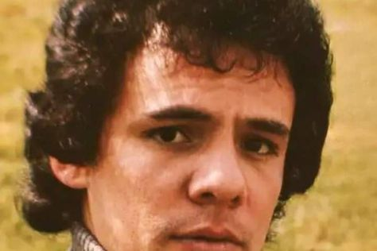

José José

Nacimiento
José Rómulo Sosa Ortiz, conocido artísticamente como José José, nació el 17 de febrero de 1948 en la Ciudad de México.
Creció dentro de una familia relacionada con la música. Su padre fue tenor de ópera y su madre fue pianista.
Inicios musicales
Durante su adolescencia comenzó tocando guitarra y cantando serenatas. Posteriormente formó parte de un grupo de jazz y bossa nova llamado Los PEG.
El Triste
Uno de los momentos más importantes de su carrera ocurrió en 1970 cuando interpretó "El Triste" durante el Festival de la Canción Latina.
Aunque no obtuvo el primer lugar, su interpretación impresionó al público y ayudó a convertirlo en una de las nuevas figuras de la música mexicana.
Trayectoria
Durante las décadas de 1970 y 1980 alcanzó una enorme popularidad en México y otros países de América Latina.
Su estilo se caracterizó principalmente por la balada romántica, aunque también interpretó bolero, pop latino, jazz y otros géneros.
Uno de sus trabajos más importantes fue el álbum "Secretos", publicado en 1983. Este disco se convirtió en uno de los mayores éxitos de su carrera.
Canciones destacadas
- El Triste
- La Nave del Olvido
- Gavilán o Paloma
- Lo Pasado, Pasado
- Almohada
- Amar y Querer
Última etapa de su carrera
Con el paso de los años diferentes problemas de salud afectaron su voz y redujeron sus presentaciones musicales.
En 2004 celebró 41 años de trayectoria con un concierto en el Auditorio Nacional de la Ciudad de México. Continuó realizando algunas apariciones y actividades artísticas durante los años posteriores.
Fallecimiento y legado
José José falleció el 28 de septiembre de 2019 en Florida, Estados Unidos, a los 71 años.
Es recordado como "El Príncipe de la Canción" y como una de las voces más importantes de la música romántica en español.